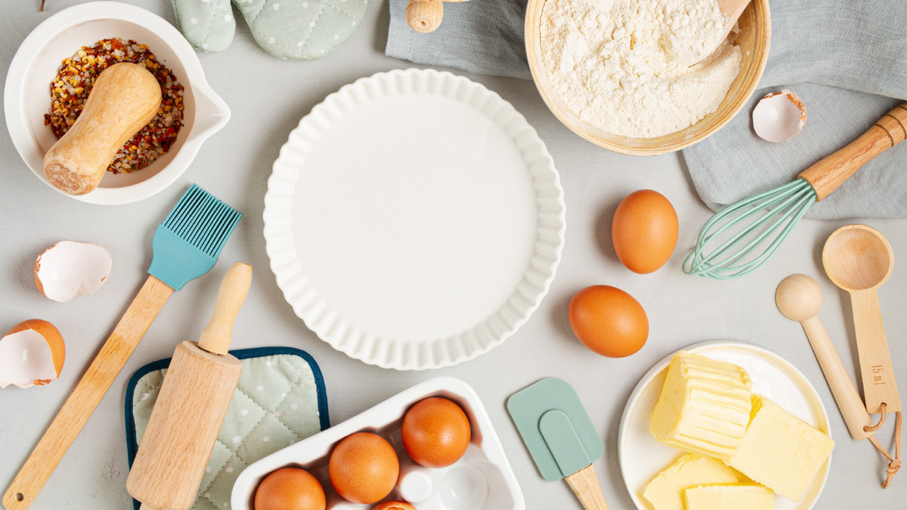

REPOSTERIA
SU ORIGEN, PASADO Y PRESENTE
Qué es la Repostería La repostería es un oficio que se encarga de preparar y decorar dulces, tales como tortas, ponqués, galletas, cremas, salsas dulces, pasteles, budines y confites. Quien ejerce este oficio se llama repostero.
La repostería es considerada como un tipo específico de gastronomía, es decir, como una rama de la cocina profesional, que se especializa en la elaboración de postres. Al igual que la gastronomía, la excelencia en el oficio de la repostería se debe al conocimiento y buen uso de las técnicas.
Dependiendo de ello, la calidad del resultado puede variar. Asimismo, también se guarda extremo cuidado con la presentación y decoración de los platos. Se exploran, por lo tanto, colores, formas y texturas que buscan despertar el apetito y la curiosidad del comensal. En la repostería se usan diversos tipos de productos y materiales básicos. El que no puede faltar es el endulzante principal. Casi siempre se usa el azúcar común, pero también se pueden usar productos como miel, azúcar de caña, azúcar moscabada, endulzantes artificiales, etc.
Es común el uso de harina de trigo, huevos, materias grasas (mantequilla, margarina, aceite, manteca de cerdo), gelatina animal o vegetal, frutas, frutos secos, cacao, cremas, esencias, aromatizantes, saborizantes y colorantes, entre otros.